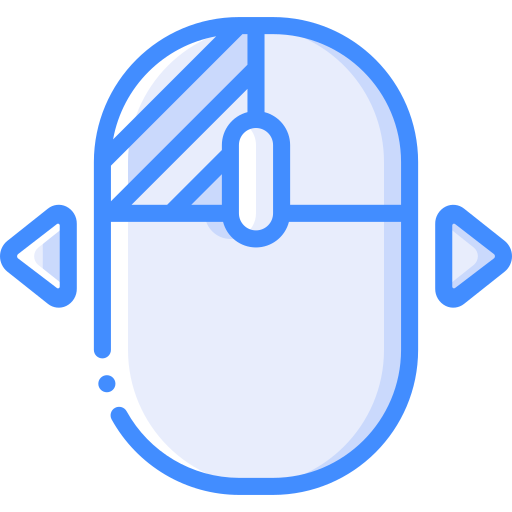
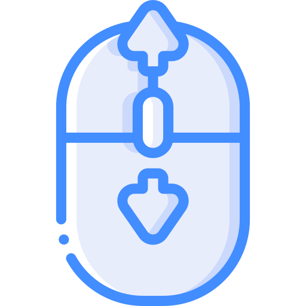

Interactive Comparison: Static

Drag with left click to rotate.
Scroll to zoom in/out.Recent methods can recover complete 3D objects and plausible scene arrangements, but often produce unstable contacts because physical validity is not explicitly enforced. φ-Scene instead places physical grounding at the core of 3D scene reconstruction by formulating it as a physical assembly process, producing much more coherent and physically stable 3D scenes.
Interactive Comparison: Dynamic
When the reconstructed 3D scenes are released in a physics simulator, prior methods often explode / fall apart due to unstable contacts like penetrations, yielding severe post-simulation drift. In contrast, φ-Scene's topology-driven physical assembly strategy keeps the 3D scene almost in a global rigid-body equilibrium, allowing it stay physically stable with minimal post-simulation drift.
BibTeX
Please consider citing our paper if you find it useful in your research. 🌹
@article{li2026phi,
title={$\phi$-Scene: Physically Grounded Image-to-3D Scene Reconstruction},
author={Li, Haodong and Shao, Lulu and Lu, Haolin and Fu, Yu and Chen, Yen-Ru and Jain, Seemandhar and Chandraker, Manmohan},
journal={arXiv preprint arXiv:2606.21596},
year={2026}
}